구분 | Name | Description |
| SILO Icon | Silo 메뉴 이동 버튼 |
| Menu | Silo 내부 자료 분류 탭 |
| Document Tree | 프로젝트에 포함된 문서 목록 |
| Favorites | 즐겨찾기로 추가된 자료가 표시되는 영역 |
| Add favorites | 선택된 문서를 즐겨찾기에 추가 |
SILKROAD Silo는 프로젝트별로 SILKROAD에 등록된 요구사항 문서, 테스트 문서, Code & Standard, Meeting Minutes 등을 조회하고 변경이력을 확인할 수 있는 기능을 제공한다.
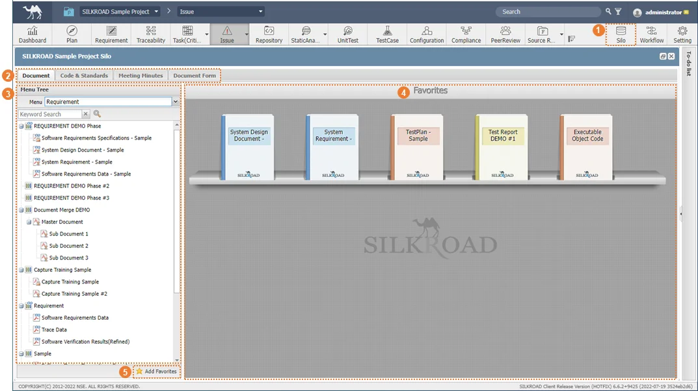 |
구분 | Name | Description |
| SILO Icon | Silo 메뉴 이동 버튼 |
| Menu | Silo 내부 자료 분류 탭 |
| Document Tree | 프로젝트에 포함된 문서 목록 |
| Favorites | 즐겨찾기로 추가된 자료가 표시되는 영역 |
| Add favorites | 선택된 문서를 즐겨찾기에 추가 |
SILKROAD Silo는 프로젝트 정보창을 통해서도 접근이 가능하다.
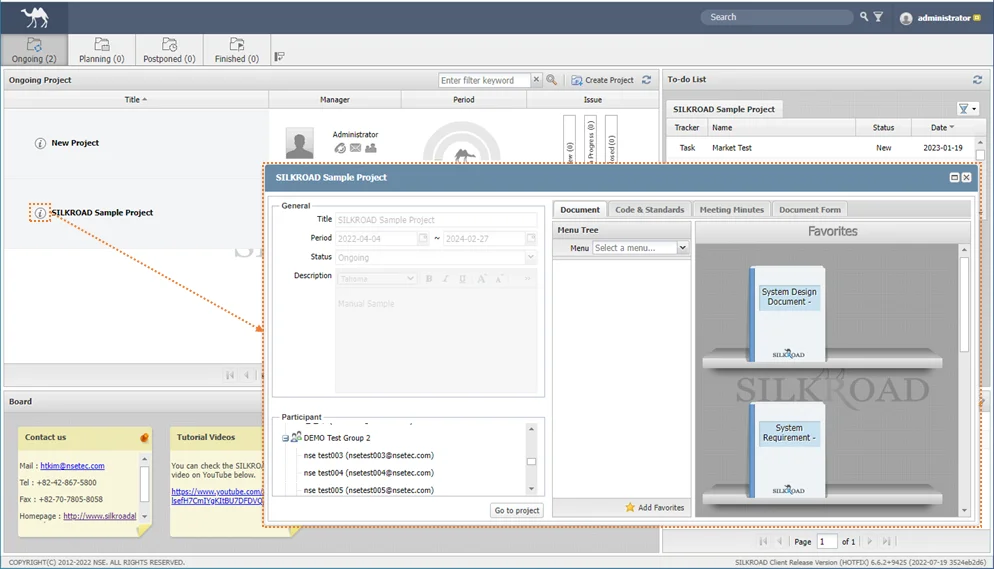 |
① SILO 내부 자료 탭에서 Document 탭을 선택한다.
② Menu&Tracker Tree의 드롭다운 메뉴에서 등록하고자 하는 문서가 있는 메뉴를 선택한다.
|
③ 문서 리스트에서 문서를 선택한다.
④ 마우스 드래그&드롭으로 Favorites 영역으로 옮긴다.
⑤ 또는, ‘Menu & Tracker Tree’ 영역 하단의 ‘Add Favorites’ 버튼을 클릭한다.
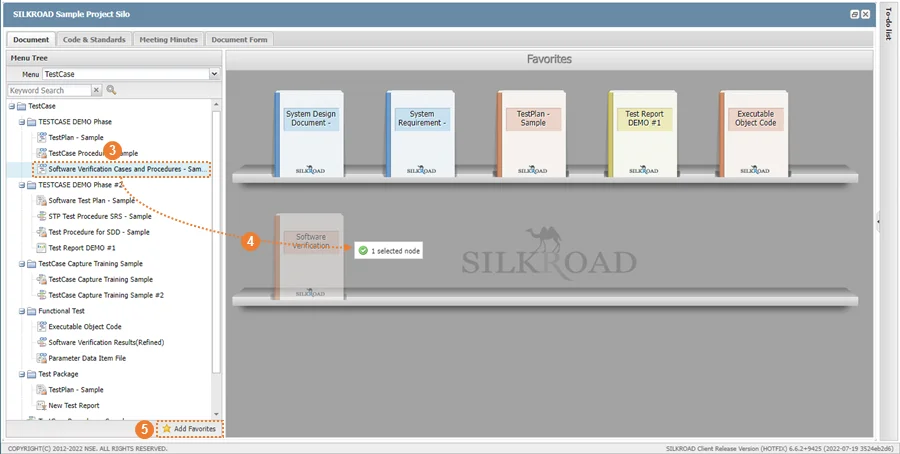 |
⑥ 선택한 문서가 ‘Favorite’ 영역에 표시된다.
|
① 즐겨찾기 영역에서 삭제하고자 하는 문서를 선택하고 마우스 우클릭한다.
② 생성되는 메뉴 중 ‘Delete Favorites’ 버튼을 선택한다.
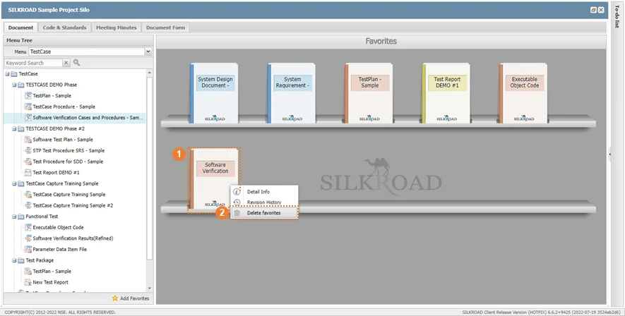 |
③ 또는, 드래그&드롭으로 문서 리스트로 이동시킨다.
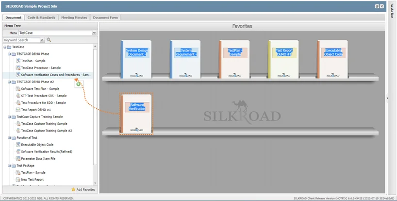 |
① Favorites 영역의 문서를 우클릭하여 생성되는 메뉴 중 ‘Detail info’메뉴를 선택한다.
② 또는, Menu&Tracker Tree에서 문서 또는 Favorites에 등록된 문서를 더블 클릭한다.
③ 생성되는 정보창을 통하여 문서의 정보(문서내용, 문서편집기 실행, Revision History, Base Requirement/Testfeature, Linked Item and Documents 등)를 확인할 수 있다.
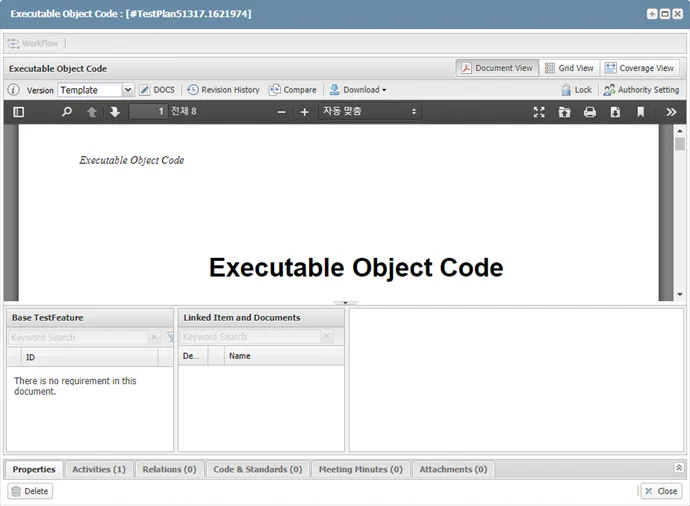 |
① Favorites 영역의 문서를 우클릭하여 생성되는 메뉴 중 ‘Revision History’ 메뉴를 선택한다.
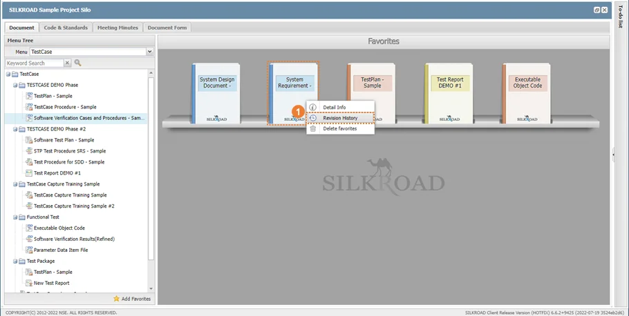 |
② 또는. ‘2.2.1 문서 정보창 확인’을 통하여 생성된 정보창의 ‘Revision History’ 메뉴를 선택한다.
③ 생성된 Revision History 창을 통하여 문서 이력 확인할 수 있다.
④ ‘Compare’, ‘Word Download’, ‘Revision Download’ 기능을 활용할 수 있다.
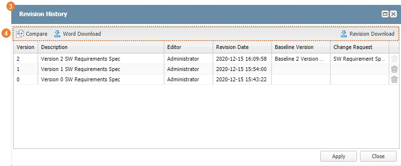 |
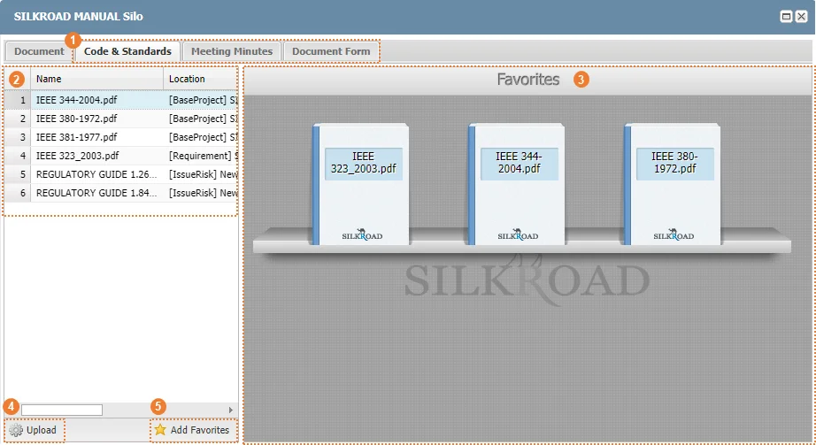 |
구분 | Name | Description |
| Menu | Silo 내부 자료 분류 탭 |
| Attachment List | Code & Standards에 첨부된 파일 목록 |
| Favorites | 즐겨찾기로 추가된 자료가 표시되는 영역 |
| Upload | 파일 등록 |
| Add Favorites | 우측 Favorite 영역에 파일 추가 |
Silo의 Code&Standard / Meeting Minutes / Document Form에 파일을 등록하는 방법은 다음과 같은 두 가지 방법으로 구성된다.
① 요구사항 상세정보, Issue 상세정보 등 공통 창 하단의 Code & Standards 탭에 파일을 첨부하면 Silo의 Code & Standards 탭에 파일 목록이 표시된다. Meeting minutes, Document Forms도 동일한 방법으로 첨부 및 조회가 가능하다.
|
② 좌측 문서리스트 하단의 Upload 버튼을 선택하여 생성된 탐색기창에서 등록하고자하는 문서를 선택하여 등록한다.
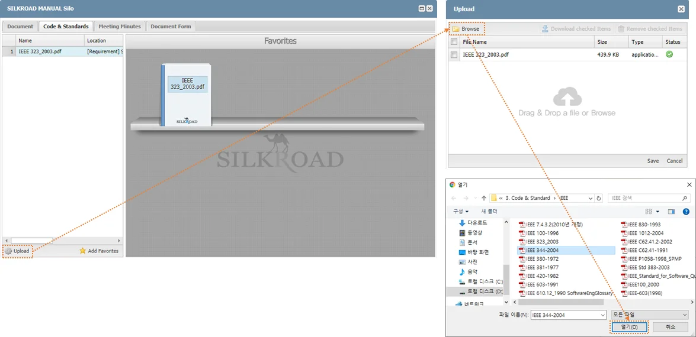 |
① 좌측의 문서리스트에서 등록하고자 하는 문서를 선택한다.
② 마우스 드래그&드롭으로 Favorites 영역으로 옮기거나 또는 ‘Add Favorites’ 버튼을 클릭한다.
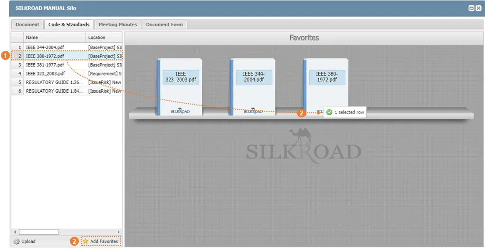 |
① 즐겨찾기 영역에서 삭제하고자 하는 문서를 선택하고 마우스 우클릭한다.
② 생성되는 메뉴 중 ‘Delete Favorites’ 버튼을 선택한다.
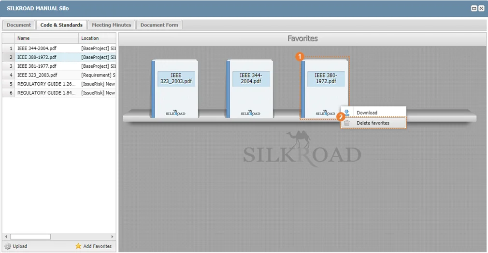 |
③ 또는, 드래그&드롭으로 문서 리스트로 이동시킨다.
Code&Standard / Meeting Minutes 에 등록된 문서의 등록
① Favorites에 등록된 문서를 우클릭하여 ‘Download’ 버튼을 선택한다.
② 파일 리스트의 최우측 칼럼의 ‘ ’ 버튼을 클릭한다.
’ 버튼을 클릭한다.
③ 또는, Favorites에 등록한 문서를 마우스 더블 클릭한다.
|
① 파일 리스트의 파일을 우클릭하여 ‘View target data detail’ 버튼을 선택한다.
② Code&Standard / Meeting Minutes 에 등록된 파일이 첨부된 원본 파일의 정보창이 실행된다.
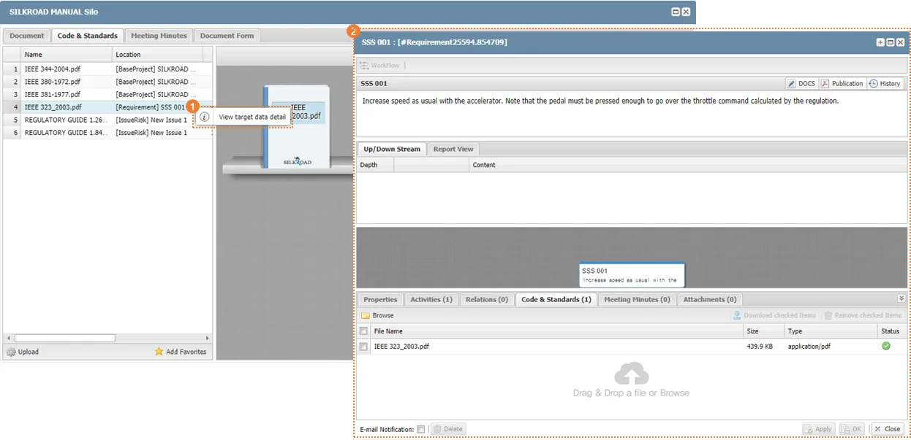 |
③ SILO에서 Upload 한 문서의 경우에는 Project 정보창이 생성된다.
번호 | 메시지 | 설명 | 해결방안 |
|---|---|---|---|
1 | ‘문서명’ has already been added. | 동일 문서를 중복적으로 즐겨찾기에 등록할 경우 | - |
2 | |||
3 | |||
4 | |||
5 | |||
6 | |||
7 | |||
8 | |||
9 |